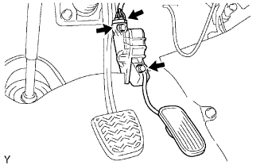

CẦN ĐẨY BÀN ĐẠP GA > THÁO RA
Xem Phần Chuẩn Bị
Kích chuột vào đây
1. NGẮT CÁP ÂM RA KHỎI CỰC ÂM ẮC QUY
LƯU Ý:
Hãy đợi ít nhất là 90 giây sau khi ngắn cáp ra khỏi cực âm của ắc quy để tránh làm nổ túi khí.
2. THÁO CẦN ĐẨY BÀN ĐẠP GA

Ngắt giắc của cảm biến vị trí bàn đạp ga.
Tháo 2 đai ốc và bàn đạp ga.
CHÚ Ý:
Không được đánh rơi hoặc gõ vào cần đẩy bàn đạp ga.
Không tháo rời cụm bàn đạp ga.